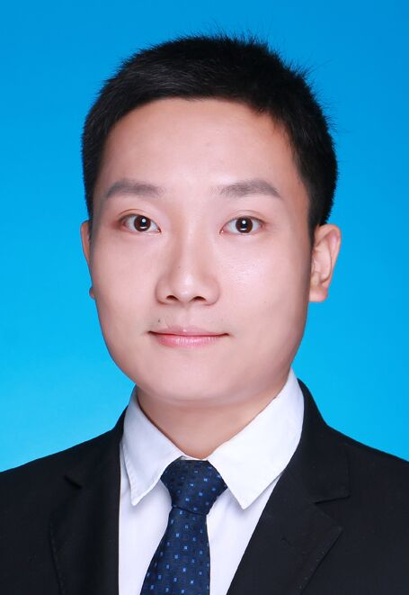

王皓 博士
深圳开鸿数字产业发展有限公司 高级副总裁、研发总裁
王皓于2017年获得北京大学博士学位，研究方向为计算机软件与理论。2017年至2022年在华为公司从事终端操作系统网络与通信技术的工程架构与技术创新，参与主导了鸿蒙网络聚合加速技术 LinkTurbo、鸿蒙分布式软总线等鸿蒙操作系统核心技术的立项、研发和持续演进；2022年至今在深圳开鸿数字产业发展有限公司担任公司研发负责人，主导了基于开源鸿蒙的行业鸿蒙发行版操作系统KaihongOS的研发工作。在ACM Mobicom，ACM Ubicomp，IEEE TMC，IEEE Computer，IEEE Communications，Patterns等顶级国际期刊/会议/杂志发表论文10余篇，授权国内/国际发明专利40余项，这些工作已经在超过9亿台终端产品商用至今，并入选华为2021第四届十大发明↗、中国电子信息行业联合会2024优秀软件工程师、中国计算机学会CCF2025技术发明一等奖↗、ACM Ubicom2026十年最具影响力论文奖↗等。
工作经历
深圳开鸿数字产业发展有限公司
2022.09 - 至今高级副总裁、研发总裁
全面负责操作系统及相关底层架构的研发业务。
华为技术有限公司
2017.09 - 2022.09华为终端 · 技术专家B
从事终端操作系统网络与通信技术的工程架构与技术创新。
代表成果
ACM Mobicom，ACM Ubicomp，IEEE TMC，IEEE Computer，IEEE Communications，Patterns等顶级国际期刊/会议/杂志发表论文10余篇，总被引 2800+ 次。
SMUFF: Towards Line Rate Wi-Fi Direct Transport with Orchestrated On-device Buffer Management
Chengke Wang, Hao Wang, Yuhan Zhou, Yunzhe Ni, Feng Qian, Chenren Xu
NSDI 2024 (CCF-A), pp. 1369–1383
✦ 让用户用上了WiFi标称的极限速率（94.7%，在华为手机达到99%），将端端传输的速率问题Close。
Experience: A Three-Year Retrospective of Large-scale Multipath Transport Deployment for Mobile Applications
Chengke Wang, Hao Wang, Feng Qian, Kai Zheng, Chenglu Wang, Fangzhu Mao, Xingmin Guo, Chenren Xu
ACM MobiCom 2023 (CCF-A), pp. 1–15
✦ 以纯软方案将多个网络模组（Wi-Fi和蜂窝）的能力堆叠融合的亿级别大规模实证算法研究。
荣誉与奖项
- UbiComp 10-Year Impact Award, ACM UbiComp (2026.10)
- CCF技术发明一等奖, 中国计算机学会 (2025.10)
- 中国优秀软件工程师, 中国电子信息行业联合会 (2024.10)
- 华为公司十大发明 (第一发明人), 华为技术有限公司 (2022.06)
- 华为公司金牌个人, 华为技术有限公司 (2020.12)
教育经历
北京大学
2013.09 - 2017.07博士 | 软件工程
北京大学
2010.09 - 2013.07硕士 | 软件工程
西南大学
2006.09 - 2010.07本科 | 食品科学、金融学 双学位